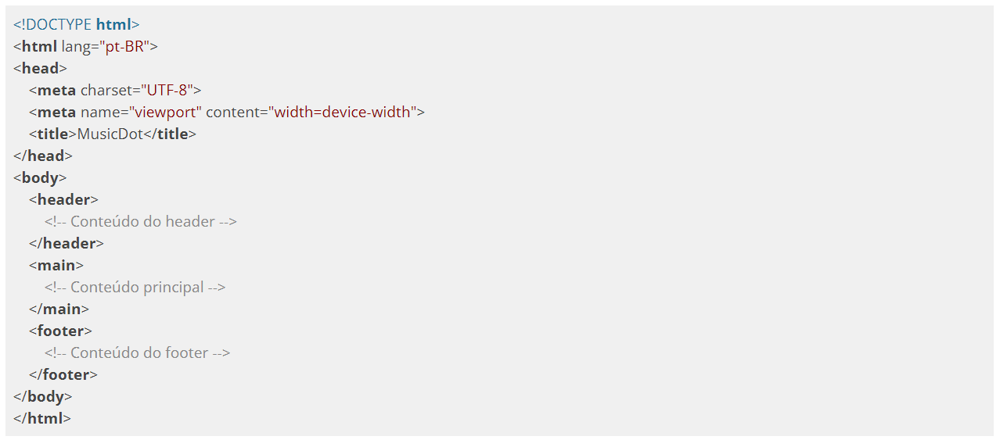
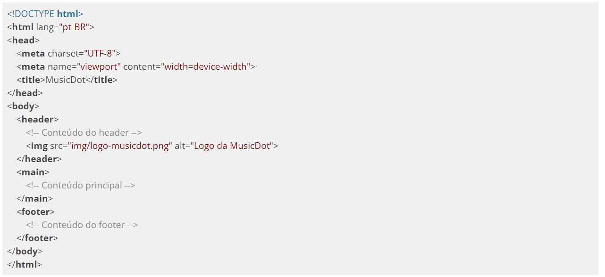
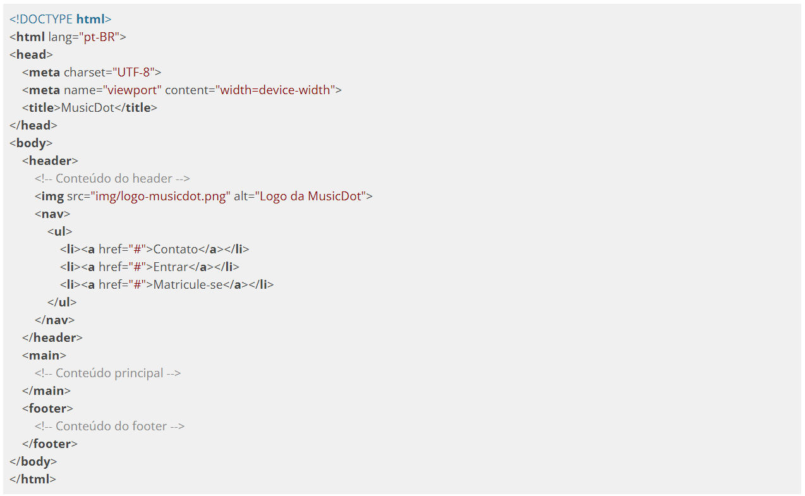

Existe hoje no mercado uma grande quantidade de empresas especializadas no desenvolvimento de sites e aplicações web, bem como algumas empresas de desenvolvimento de software ou agências de comunicação que têm pessoas capacitadas para executar esse tipo de projeto.
Um projeto de site ou aplicação web envolve muitas disciplinas em sua execução, pois são diversas características a serem analisadas e diversas as possibilidades apresentadas pela plataforma. Por exemplo, devemos conhecer muito bem as características do público alvo, pois ele define qual a melhor abordagem para definir a navegação, tom linguístico e visual a ser adotado, entre outras. A afinidade do público com a Internet e o dispositivo pode inclusive definir o tipo e a intensidade das inovações que podem ser utilizadas.
Algumas das motivações e práticas de Experiência do Usuário são conteúdo do curso Design de Interação, Experiência do Usuário e Usabilidade. O resultado do trabalho dessa equipe é uma série de definições sobre a navegação (mapa do site) e um esboço de cada uma das visões, que são os layouts das páginas, e visões parciais como, por exemplo, os diálogos de alerta e confirmação da aplicação. Por essas visões serem esboços ainda, a parte de estilo do site fica mais genérica: são utilizadas fontes, cores e imagens neutras, embora as informações escritas devam ser definidas nessa fase do projeto.
Esses esboços das visões são o que chamamos de wireframes e guiam o restante do processo de design.
Para que as informações sejam exibidas de forma correta e para possibilitar outras formas de uso e interação com o conteúdo, é necessário que a equipe de programação front-end transforme essas imagens em telas visíveis e, principalmente, utilizáveis pelos navegadores.
Analisando o Layout
Antes de digitar qualquer código, é necessária uma análise do layout. Com essa análise, definiremos as principais áreas de nossas páginas. Note que há um cabeçalho (uma área que potencialmente se repetirá em mais de uma página), um rodapé e um conteúdo principal. Seguindo o pensamento de escrever o nosso código pensando em semântica em primeiro lugar, já podemos imaginar como que será a estrutura no documento html

Uma recomendação é a de começar a planejar o código sempre analizando de fora para dentro. Portanto, depois de ver as 3 principais camadas (<header>, <main> e <footer>) vamos nos aprofundar em uma delas. Vamos partir da ordem de declaração e nos aprofundar mais na tag <header>. Dentro de header temos uma logo e 3 links. Sabemos já que a logo é uma imagem:

Agora com os links precisamos notar que são links que vão para outras páginas dentro do nosso próprio site portanto esses 3 links fazem parte de uma navegação e que são 3 links em sequência. Quando temos elementos iguais em sequência temos uma lista! Nesse nosso caso a ordem dos links não importa:
